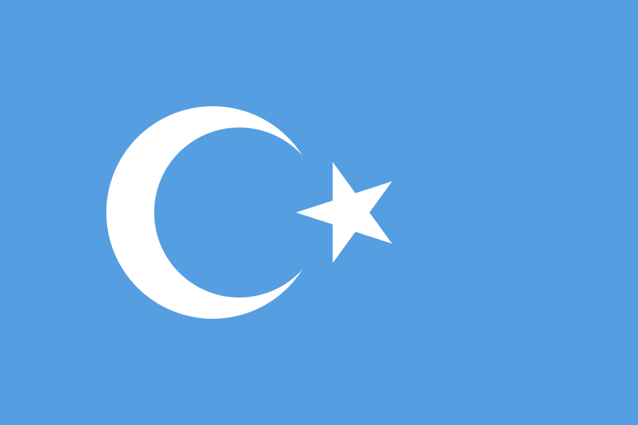

"Tarihini bilmeyen milletler, yok olmaya mahkûmdur."
Halaskârgazi Mustafa Kemal Atatürk
Türklerin Uğradığı Soykırım, Katliam, İşkence ve Suikastlar
| Tüm verilerin kaynakları belirtilmiştir.
Bilgi
Veriler yükleniyor...